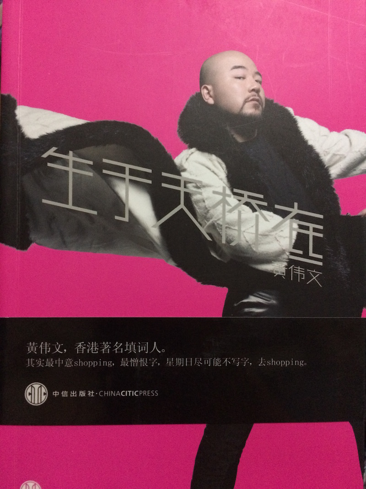

参演电影
| 电影名称 | 年份 | 角色 | 合作演员 |
| 天空小说 Out of The Blue |
1995 | 时装界人士 | 林海峰、葛民辉、一众903DJ |
| 流氓医生 Dr. Mack |
1995 | 黑社会大佬 | 梁朝伟、锺丽缇、许志安、杜德伟 |
| 整蛊王 Tricky business |
1995 | 史松（整蛊人的有钱仔） | 罗家英、刘青云 |
| 偷偷爱你 Blind Romance |
1996 | 梁朝伟、邱淑贞、葛民辉 | |
| 百分百o岩Feel Feel 100%...Once More |
1996 | 郑伊健、郑秀文、邱淑贞、葛民辉 | |
| 百分百感觉 Feel 100% |
1996 | 郑伊健、郑秀文、葛民辉 | |
| 金枝玉叶2 Who's the woman, who's the man |
1996 | 金曲节目主持人 | 袁咏仪、张国荣、梅艳芳 |
| 四面夏娃 4 faces of Eve |
1996 | 葛民辉的大陆朋友 | 吴君如、葛民辉 |
| 算死草 Lawyer lawyer |
1997 | 龙二（整蛊人的状元） | 周星驰、葛民辉 |
| 戆星先生 | 1997 | 光头祥（黑社会） | 葛民辉、张燊悦、张达明、袁咏仪 |
| 夜半两点钟 02:00 AM |
1997 | 陈宝莲、陈小春、黎瑞恩、徐锦江、周文健 | |
| 爱你爱到杀死你 Killing me tenderly |
1997 | Sammi的经理人 | 黎 明、郑秀文、谷德昭、吴君如、黎耀祥 |
| 初恋无限Touch First love unlimited |
1997 | 大咪咪 | 陈晓东、梁咏琪 |
| KO雷霆一击 Knock Off |
1998 | 徐克导演，尚格云顿主演 | |
| 人妖打排球 The iron ladies |
2000 | 柏芝(配音) （同时主唱主题曲） |
吴君如、谷德昭、葛民辉 |
| 玉女添丁 Dummy mommy, without a baby |
2001 | 阿劲 | 杨千嬅、陈冠希 |
| 4x100水着份子 United we stand, and swim |
2001 | 黑社会大哥 （同时主唱主题曲） |
黄秋生、森 美、小 仪、吴佩慈 |
| 别恋 Stolen love |
2001 | 洛西（天使） | 李彩华、林 峯、张达明 |
| 新扎师妹 Love undercover |
2002 | 千嬅朋友 | 杨千嬅、吴彦祖、黄浩然 |
| 这个夏天有异性 Summer breeze of love |
2002 | 王杰及许绍雄旧同学 | 蔡卓妍、锺欣桐、王 杰 |
| 赌侠2002 The conman 2002 |
2002 | 何红申 | 张家辉、冯德伦、王秀琳 |
| 五个吓鬼的少年 The mummy, aged 19 |
2002 | 牧师 | 徐天佑、黄又南、李茏怡、少爷占 |
| 我家有一只河东狮 The lion roars |
2002 | 柳神侠 | 古天乐、张柏芝、许绍雄、黄浩然 |
| 干柴烈火 Dry wood fierce fire |
2002 | 散打王 | 杨千嬅、古天乐、陈慧珊、张达明 |
| 贱精先生 If U Care |
2002 | 陈奕迅、锺欣桐、葛民辉、卢巧音 | |
| 下一站…天后 Diva.Ah Hey |
2003 | 伍乐城 | 蔡卓妍、陈小春、周丽淇、余文乐 |
| 金鸡SSS Golden Chicken S |
2014 | 拓也哥 | 吴君如 |
| 12金鸭 12 Golden Ducks |
2015 | 链球哥 | 吴君如 |
黄伟文：『最憎写字
最爱买衫』
他不介意被人笑“垃圾”，就像他从不介意是否被尊为“全港最会穿的人”。他是用硕大王冠和 Tom Ford 燕尾服加冕自己的时装奴；他是身裹 YSL 流苏皮草的新晋土豪；他是抢尽社交网络版面的自拍狂人；他是头戴礼帽，身着 Tomas Chan 的浑身带刺的绅士；他是用黑金炸弹武装自己的“光明会”一员……竭尽一生之力堆砌品牌，走街串巷，步履不停，浮夸到令人动容——他，就是 Wyman。

时尚专栏合辑
《生于天桥底》
作者: 黄伟文
出版年: 2012-1
X